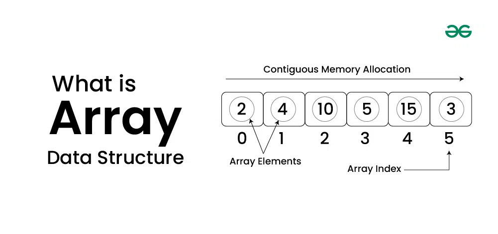

Introduction of C++
C++ is a computer programming language developed by Bjarne Stroustrup as an extension of the C language. It is known for its fast speed, low-level memory management, and is often taught as a first programming language. It provides:
Features of C++
- Object-Oriented Programming (OOPs)
- Standard Template Library (STL)
- Pointers and Dynamic Memory Allocation
- Low-Level Access
- Multithreading Support
Syntax of C++
#include <iostream>
using namespace std;
int main()
{
cout << "Hello, World!";
return 0;
}
Applications of C++
- Operating Systems
- Game Development
- Embedded Systems
Online C++ Compiler
Introduction to Array
What is an Array?
In computer science, an array is a data structure that stores a collection of elements of the same data type, typically accessed via an index.
Characteristics of an Array
- Fixed size at creation
- Contiguous memory allocation
- Direct access via index
Types of Array
- One Dimensional Array
- Two Dimensional Array
- Three Dimensional Array
Tutorial of Array
Introduction to Tree
What is a Tree?
A Tree is a hierarchical data structure used to represent data with parent-child relationships.

Characteristics of a Tree
- Single root node
- Traversals: Pre-order, In-order, Post-order
- Hierarchical data organization
Types of Tree
- Binary Tree
- Ternary Tree
- N-ary Tree
Tutorial of Tree
Introduction to Graph
What is a Graph?
A graph is a non-linear data structure consisting of nodes (vertices) and edges. It can be directed, undirected, weighted, or unweighted.

Characteristics of a Graph
- Vertices and Edges
- Directed or Undirected
- Degree: in-degree and out-degree
Types of Graph
- Directed Graph
- Undirected Graph
- Connected Graph